pacman::p_load(sf, tmap, tidyverse, ggplot2, smoothr, lubridate, sfdep, leaflet)Take-Home Exercise 2
Take-Home Exercise
Take-Home Exercise 2
1.0 Overview
Dengue fever is a common term in Singapore, commonly featured on huge signs in areas where clusters have been detected. Many of us have contracted dengue or know someone who has contracted the disease.
However, Singapore is not alone. Taiwan also experienced a dengue outbreak in 2023.
Geospatial analytics here can be more interesting than a similar analysis of COVID-19, since dengue requires a vector for transmission, mosquitoes.
In this take home exercise, I want to see how measures of spatial autocorrelation can show transmission patterns between areas, and the lack thereof. I imagine that some environmental factors may inhibit mosquito movement between areas.
I am not a mosquito expert, but I know that mosquitoes may not be able to fly over areas at high altitudes, or perhaps there may be areas that mosquitoes find more difficult to breed in, leading areas to be less affected by their neighbours.
I read that Tainan City, accounts for 90% of the total case count in 2023 and is consider the most at-risk area. In this takehome exercise, we will zoom into Tainan City to have a closer look.
https://crisis24.garda.com/alerts/2023/10/taiwan-elevated-dengue-fever-activity-reported-across-multiple-areas-through-early-october-update-3
1.1 Objectives
- Process the data and confine the analysis to D01, D02, D04, D06, D07, D08, D32 and D39 towns of Tainan City, Taiwan.
- Perform Global Spatial Autocorrelation with sfdep
- Perform Local Spatial Autocorrelation with sfdep
- Perform Emerging Hotspot Analysis with sdfep
- Describe the spatial patterns observed
1.2 Considerations
- Besides the usual procedures like checking CRS, I will aggregate point data into counts, which will be used for Global and Spatial Autocorrelation measurements
- Global spatial autocorrelation should go beyond the frequentist approach
- Global and Spatial Autocorrelation measures can use the full range of epidemiology weeks 31-50, but EHSA should use other smaller ranges
- I will try to use functions instead of duplicating code, which I did in the previous take home exercise. The DRY principle still applies in R.
2.0 Setup
2.1 Dependencies
Loading the required packages
sf Needed to handle spatial data through the new simple features standard
tmap Create thematic maps, particularly chloropleth maps in our case
tidyverse For easy data manipulation and some visualisation
ggplot2 A step above the usual visualisations, like histograms
smoothr I use it to remove holes in geometry
lubridate Makes handling dates easy, great for dealing with epidemiology weeks
sfdep Spatial dependence with spatial features, the highlight of this take home exercise. The spacetime object is particularly useful
2.2 Datasets
Loading the TAINAN_VILLAGE dataset, which contains polygons representing the borders of each village of Tainan City.
The hierarchy of “zones” in Tainan city area broken into Counties, Towns, then Villages.
twv <- st_read(dsn = "data/geospatial",
layer = "TAINAN_VILLAGE")Reading layer `TAINAN_VILLAGE' from data source
`/Users/matthewho/Work/Y3S2/IS415/Website/IS415/TakeHomeEx/TakeHomeEx2/data/geospatial'
using driver `ESRI Shapefile'
Simple feature collection with 649 features and 10 fields
Geometry type: POLYGON
Dimension: XY
Bounding box: xmin: 120.0269 ymin: 22.88751 xmax: 120.6563 ymax: 23.41374
Geodetic CRS: TWD97Loading the Dengue Daily aspatial dataset. This dataset contains points, representing dengue cases.
dengued <- read_csv("data/aspatial/Dengue_Daily.csv")Setting random seed
set.seed(42)3.0 Wrangling
3.1 Extracting Columns
Before extracting columns, I also wanted to see the types of additional information useful to our analysis. Some notable considerations are as follows.
Serotype
Gender
Age group
Number of cases
quick_check <- dengued %>% filter(發病日 >= as.Date("2023-07-30") & 發病日 <= as.Date("2023-12-16"))I was quite excited to check out different serotypes, or “type” of dengue. However, 85% of the rows do not have the data, which points to the fact that the exact serotype of each case was probably not recorded. Ouch.
sum(sum(quick_check[[22]] == "None", na.rm = TRUE)) / nrow(quick_check)[1] 0.8548773In the grand scheme of spatial autocorrelation, since dengue can be transmitted from a person of any gender to another through a mosquito, splitting the analysis between men and women does not make sense. The same goes for age groups.
However, I thought I would take a look at the statistics for gender.
Although there are slightly more women than men in Taiwan, there are slightly more men infected. https://www.statista.com/statistics/319808/taiwan-sex-ratio/#:~:text=In%202023%2C%20the%20total%20population,97.35%20males%20to%20100%20females
I think this can be attribute to more men in outdoor manual labour jobs, such as construction, where they are more exposed to mosquitoes.
table(dengued[[4]])
None 女 男
1 52355 54505 There was a column representing the number of cases per row. This was mostly 1, but contained some 2 values, which is quite unintuitive. I check that the rows within the timeframe for analysis are all 1.
They were all 1, to my relief.
unique(quick_check[[19]])[1] 1Translation
Unfortunately, I cannot read and understand Chinese characters. Leaving Chinese characters and words in my data would make work very difficult and error prone, so my first priority is to extract the right columns and translate them.
I extract the needed rows and rename them.
dengued <- dengued[, c(1, 10, 11)]
names(dengued)[1] "發病日" "最小統計區中心點X" "最小統計區中心點Y"names(dengued) <- c("Onset", "X", "Y")head(dengued)# A tibble: 6 × 3
Onset X Y
<date> <chr> <chr>
1 1998-01-02 120.505898941 22.464206650
2 1998-01-03 120.453657460 22.466338948
3 1998-01-13 121.751433765 24.749214667
4 1998-01-15 120.338158907 22.630316700
5 1998-01-20 121.798235373 24.684507639
6 1998-01-22 None None Transforming the coordinate strings into numerical values
dengued[, c(2, 3)] <- lapply(dengued[, c(2, 3)], as.numeric)
head(dengued)# A tibble: 6 × 3
Onset X Y
<date> <dbl> <dbl>
1 1998-01-02 121. 22.5
2 1998-01-03 120. 22.5
3 1998-01-13 122. 24.7
4 1998-01-15 120. 22.6
5 1998-01-20 122. 24.7
6 1998-01-22 NA NA 3.2 Dealing with Missing Data
As expected, there are NA values in the dataset. I remove them here and check that they are gone.
sum(apply(dengued, 1, function(x) any(is.na(x))))[1] 780dengued <- na.omit(dengued)sum(apply(dengued, 1, function(x) any(is.na(x))))[1] 03.3 CRS and Coordinates
I check the CRS for the TAINAN VILLAGE dataset so I know which CRS to use when converting the Dengue dataset’s latlongs.
st_crs(twv)Coordinate Reference System:
User input: TWD97
wkt:
GEOGCRS["TWD97",
DATUM["Taiwan Datum 1997",
ELLIPSOID["GRS 1980",6378137,298.257222101,
LENGTHUNIT["metre",1]]],
PRIMEM["Greenwich",0,
ANGLEUNIT["degree",0.0174532925199433]],
CS[ellipsoidal,2],
AXIS["geodetic latitude (Lat)",north,
ORDER[1],
ANGLEUNIT["degree",0.0174532925199433]],
AXIS["geodetic longitude (Lon)",east,
ORDER[2],
ANGLEUNIT["degree",0.0174532925199433]],
USAGE[
SCOPE["Horizontal component of 3D system."],
AREA["Taiwan, Republic of China - onshore and offshore - Taiwan Island, Penghu (Pescadores) Islands."],
BBOX[17.36,114.32,26.96,123.61]],
ID["EPSG",3824]]It’s 3824, so I convert the dengue dataset’s latlongs to match.
dengued_sf <- st_as_sf(dengued, coords = c("X", "Y"),
crs = 3824)
st_crs(dengued_sf)Coordinate Reference System:
User input: EPSG:3824
wkt:
GEOGCRS["TWD97",
DATUM["Taiwan Datum 1997",
ELLIPSOID["GRS 1980",6378137,298.257222101,
LENGTHUNIT["metre",1]]],
PRIMEM["Greenwich",0,
ANGLEUNIT["degree",0.0174532925199433]],
CS[ellipsoidal,2],
AXIS["geodetic latitude (Lat)",north,
ORDER[1],
ANGLEUNIT["degree",0.0174532925199433]],
AXIS["geodetic longitude (Lon)",east,
ORDER[2],
ANGLEUNIT["degree",0.0174532925199433]],
USAGE[
SCOPE["Horizontal component of 3D system."],
AREA["Taiwan, Republic of China - onshore and offshore - Taiwan Island, Penghu (Pescadores) Islands."],
BBOX[17.36,114.32,26.96,123.61]],
ID["EPSG",3824]]3.4 Study Area
Looks good to proceed. I now narrow down the study area to the given towns. I also removed the NOTE column since it did not provide much information, but kept the others. The other columns and names could help me debug or google what certain regions look like later on.
twvsz <- twv[twv$TOWNID %in% c("D01", "D02", "D04", "D06", "D07", "D08", "D32", "D39"), ] %>%
subset(select = -NOTE)Visualising the study area
plot(twvsz)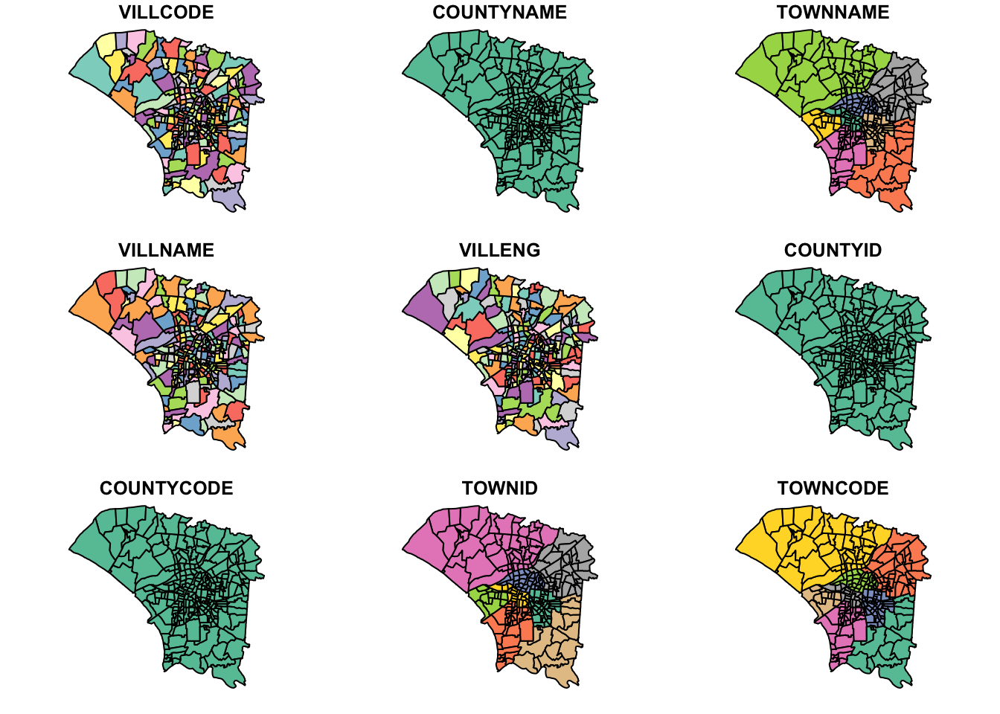
3.5 Geometry Holes
I want to ensure that all of the points from the dengue dataset fall within a polygon and not within a small gap. I use st_union to check for any holes.
u_twvsz <- st_union(twvsz)
plot(u_twvsz)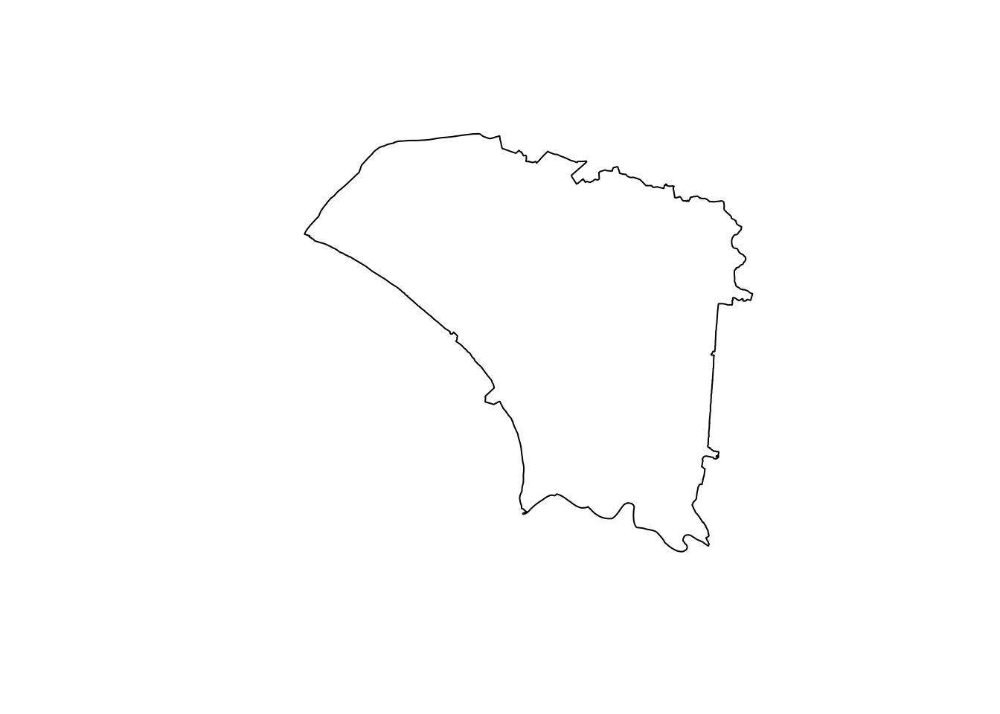
Unfortunately, there were quite a few small slithers and holes. However, they seemed quite small.
unh_twvsz <- fill_holes(u_twvsz, units::set_units(1, "km^2"))
diff_twvsz <- st_difference(unh_twvsz, u_twvsz)
plot(diff_twvsz)To ensure that we were not losing any data or jeopardising the accuracy of our analysis by expanding polygons to fill the holes, I wanted to check how many points fell within the holes.
Fortunately, we did not have any, meaning I did not have to modify the geometry.
hole_victims <- st_intersection(dengued_sf, diff_twvsz)
head(hole_victims)Simple feature collection with 0 features and 1 field
Bounding box: xmin: NA ymin: NA xmax: NA ymax: NA
Geodetic CRS: TWD97
# A tibble: 0 × 2
# ℹ 2 variables: Onset <date>, geometry <GEOMETRY [°]>3.6 Epiweeks
I restrict the data range to epidemiology weeks 31-50 2023.
Epi weeks 31-50 2023: 30-07-23 to 16-12-23
dengued_sf_epiweeks <- dengued_sf %>% filter(Onset >= as.Date("2023-07-30") & Onset <= as.Date("2023-12-16"))I now use st_intersection to restrict the points to those that fall within our study area. To reduce processing time, I did this after narrowing down our date range.
dengue_sf <- st_intersection(dengued_sf_epiweeks, u_twvsz)I then add the epi_week column according to the onset date.
dengue_sf$epi_week <- epiweek(dengue_sf$Onset)From the below plot, we can see that most cases are in the centre, around the urban centres. The northwest region appears to be mostly agricultural areas, where people are less likely to live.
I noticed there is a region in the north-east that appears to have no dengue cases recorded. I need to be careful of this later.
tm_shape(twvsz) +
tm_polygons() +
tm_shape(dengue_sf) +
tm_dots(col = "red")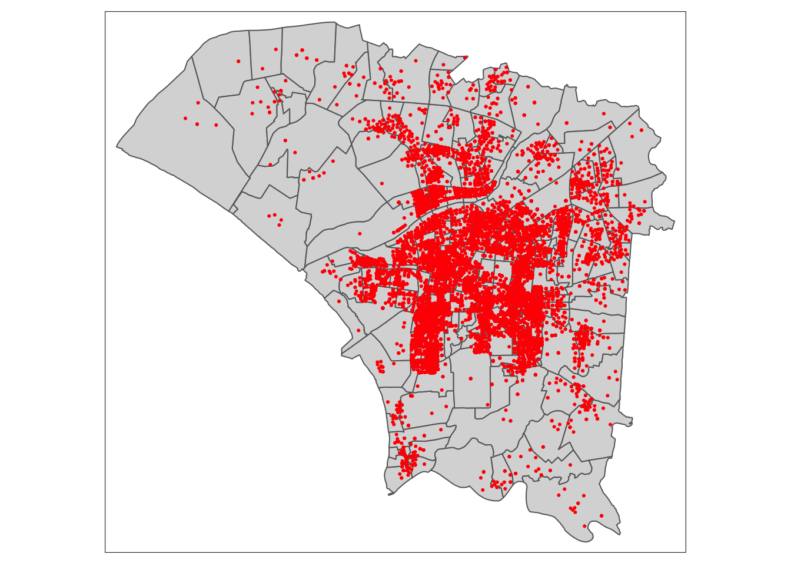

Checking the Geometry
Checking there is no duplicate geometry
vil_dupes <- any(duplicated(twvsz$VILLCODE))
vil_dupes[1] FALSE3.7 Aggregating Dengue Cases
I found a problem here.
There was a village in the northwest that did not have any dengue cases. If I were to naively combine the tainan village and dengue datasets and remove NA values, I would lose a polygon, leading to inaccurate results later on. I had to remain aware that this problematic polygon exists until I aggregate the number of dengue case, after which it could simply be 0.
Here, I use st_join to associate each dengue case with a village.
dengue_vils_sf <- st_join(twvsz, dengue_sf)Instead of simply omitting NA values, I remove only the rows without a village code, keeping the polygon with an NA value.
Below is the problematic row, which I want to keep
dengue_vils_sf[!rownames(dengue_vils_sf) %in% rownames(na.omit(dengue_vils_sf)), ]Simple feature collection with 1 feature and 11 fields
Geometry type: POLYGON
Dimension: XY
Bounding box: xmin: 120.1089 ymin: 23.0186 xmax: 120.1379 ymax: 23.0432
Geodetic CRS: TWD97
VILLCODE COUNTYNAME TOWNNAME VILLNAME VILLENG COUNTYID COUNTYCODE
444 67000350035 臺南市 安南區 鹿耳里 Lu'er Vil. D 67000
TOWNID TOWNCODE Onset epi_week geometry
444 D06 67000350 <NA> NA POLYGON ((120.1332 23.04291...dengue_vils_sf <- dengue_vils_sf[!is.na(dengue_vils_sf$VILLCODE), ]The below code create the aggregated data by counting the rows without NA values. For the dataframe grouped by epiweeks, I insert a 0 value to preserve the geometry, which will not interfere with further analysis.
I create 2 dataframes, one grouped by village code and the other grouped by both village code and epiweek (total cases for each zone).
dengue_vils_gb_vc <- dengue_vils_sf %>%
group_by(VILLCODE, VILLENG) %>%
summarise(count = sum(!is.na(epi_week)))
dengue_vils_gb_vcSimple feature collection with 258 features and 3 fields
Geometry type: POLYGON
Dimension: XY
Bounding box: xmin: 120.0627 ymin: 22.89401 xmax: 120.2925 ymax: 23.09144
Geodetic CRS: TWD97
# A tibble: 258 × 4
# Groups: VILLCODE [258]
VILLCODE VILLENG count geometry
<chr> <chr> <int> <POLYGON [°]>
1 67000270001 Taizi Vil. 37 ((120.2672 22.99655, 120.2668 22.99643, 120…
2 67000270002 Tuku Vil. 15 ((120.2659 22.99146, 120.2631 22.99132, 120…
3 67000270003 Yijia Vil. 39 ((120.2492 22.98265, 120.2492 22.98244, 120…
4 67000270004 Rende Vil. 105 ((120.239 22.98012, 120.2389 22.98011, 120.…
5 67000270005 Renyi Vil. 163 ((120.2577 22.97432, 120.2572 22.97432, 120…
6 67000270006 Xintian Vil. 15 ((120.2713 22.96804, 120.2712 22.96803, 120…
7 67000270007 Houbi Vil. 41 ((120.2404 22.95915, 120.2404 22.95884, 120…
8 67000270008 Shanglun Vil. 30 ((120.2701 22.94841, 120.2684 22.94632, 120…
9 67000270011 Bao'an Vil. 19 ((120.2304 22.93544, 120.2301 22.93511, 120…
10 67000270012 Chenggong Vil. 62 ((120.2247 22.96165, 120.2247 22.96165, 120…
# ℹ 248 more rowsdengue_vils_gb_vc_epi <- dengue_vils_sf %>%
group_by(VILLCODE, epi_week) %>%
summarise(count = sum(!is.na(epi_week)))
dengue_vils_gb_vc_epi$epi_week <- ifelse(is.na(dengue_vils_gb_vc_epi$epi_week), 31, dengue_vils_gb_vc_epi$epi_week)
dengue_vils_gb_vc_epiSimple feature collection with 3518 features and 3 fields
Geometry type: POLYGON
Dimension: XY
Bounding box: xmin: 120.0627 ymin: 22.89401 xmax: 120.2925 ymax: 23.09144
Geodetic CRS: TWD97
# A tibble: 3,518 × 4
# Groups: VILLCODE [258]
VILLCODE epi_week count geometry
* <chr> <dbl> <int> <POLYGON [°]>
1 67000270001 33 1 ((120.2672 22.99655, 120.2668 22.99643, 120.2664 …
2 67000270001 34 1 ((120.2672 22.99655, 120.2668 22.99643, 120.2664 …
3 67000270001 35 2 ((120.2672 22.99655, 120.2668 22.99643, 120.2664 …
4 67000270001 36 2 ((120.2672 22.99655, 120.2668 22.99643, 120.2664 …
5 67000270001 37 6 ((120.2672 22.99655, 120.2668 22.99643, 120.2664 …
6 67000270001 38 3 ((120.2672 22.99655, 120.2668 22.99643, 120.2664 …
7 67000270001 39 4 ((120.2672 22.99655, 120.2668 22.99643, 120.2664 …
8 67000270001 40 1 ((120.2672 22.99655, 120.2668 22.99643, 120.2664 …
9 67000270001 41 1 ((120.2672 22.99655, 120.2668 22.99643, 120.2664 …
10 67000270001 42 2 ((120.2672 22.99655, 120.2668 22.99643, 120.2664 …
# ℹ 3,508 more rowsHere I can see that my approach worked correctly. I have preserved all polygons.
plot(dengue_vils_gb_vc_epi)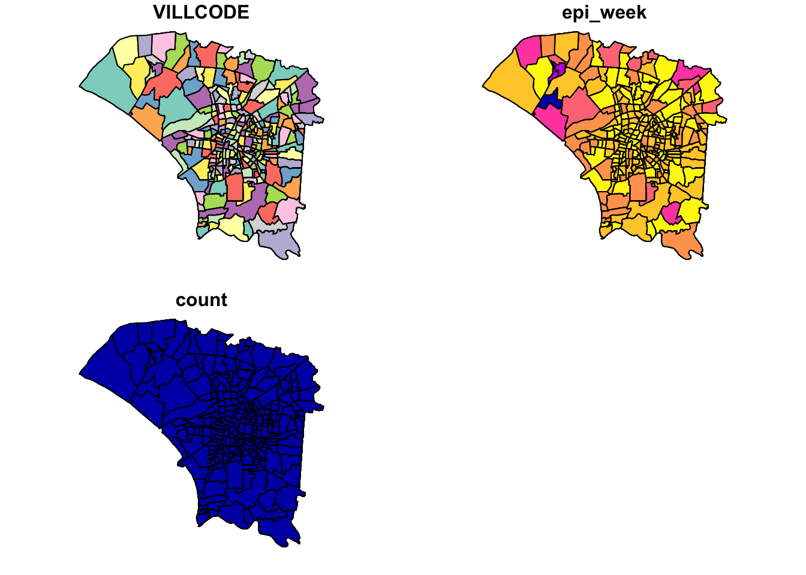
3.8 Spacetime Cube
Now to create the spacetime cube, I create a 0 value for each combination that does not exist, expanding on the previous NA value handling.
template <- expand.grid(VILLCODE = unique(dengue_vils_gb_vc_epi$VILLCODE),
epi_week = unique(dengue_vils_gb_vc_epi$epi_week))
merged_df <- merge(template, dengue_vils_gb_vc_epi, by = c("VILLCODE", "epi_week"), all.x = TRUE)
merged_df$count[is.na(merged_df$count)] <- 0
merged_df <- select(merged_df, -geometry)
merged_df <- st_as_sf(distinct(merge(merged_df, dengue_vils_gb_vc_epi[, c("VILLCODE", "geometry")],
by = "VILLCODE", suffixes = c("", ".y"), all.x = TRUE)))I now check that the dimensions match up. It’s not exactly cube, but a block. It matches up, and I save the processed spacetime cube.
print(nrow(merged_df))[1] 5160print(length(unique(merged_df$VILLCODE)))[1] 258print(length(unique(merged_df$epi_week)))[1] 20spt <- as_spacetime(merged_df, "VILLCODE", "epi_week")
is_spacetime_cube(spt)[1] TRUEwrite_rds(spt, "data/rds/spt.rds")If data is full of landmines, the NA value remaining partially throughout the process was a dirty needle. It won’t hurt too much immediately, but it might mess me up in the long run.
4.0 EDA
I wanted to see how the number of new cases changed every week, taking inspiration from
https://jenpoer-is415-gaa-exercises.netlify.app/take-home-exercises/exe-02/the2#exploratory-data-analysis-eda-with-choropleth-maps
From the facets map, we can observe that cases originated from the central to southeast region before spreading and remaining the in central region. Infections then dissipated in the central regions, while some new cases kept emerging in the less central regions.
4.1 Cases by Epidemiology Week
tm_shape(dengue_vils_gb_vc_epi) +
tm_polygons(col='white') +
tm_shape(dengue_vils_gb_vc_epi) +
tm_polygons("count",
palette = "Blues",
style="quantile") +
tm_facets(by="epi_week", free.coords = FALSE)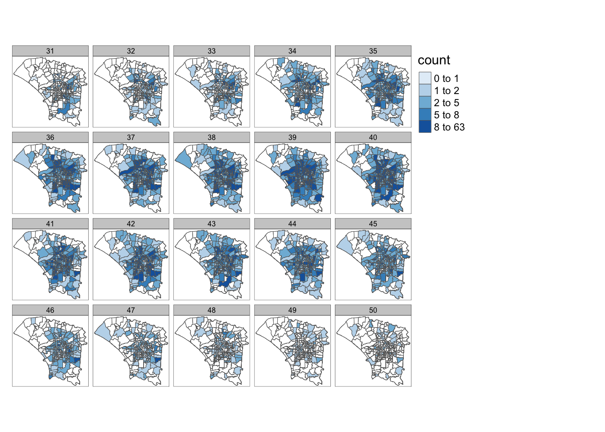
4.2 Overall Cases
Overall, the number of cases appears to be quite uneven, with some outliers. As such, quantile breaks may be more suitable here. However, the default of 5 does not seem to be enough, since I want more granularity in the regions with fewer cases, so I used n=10.
I would have liked a population estimate for each village to do some normalisation, but there wasn’t one here.
dengue_vils_gb_vc_sortby_count <- dengue_vils_gb_vc %>%
arrange(count)
hist(dengue_vils_gb_vc_sortby_count$count,
breaks = seq(min(dengue_vils_gb_vc_sortby_count$count), max(dengue_vils_gb_vc_sortby_count$count) + 20, by = 20),
col = "skyblue",
border = "black",
main = "Histogram of Dengue Cases",
xlab = "Cases",
ylab = "Frequency")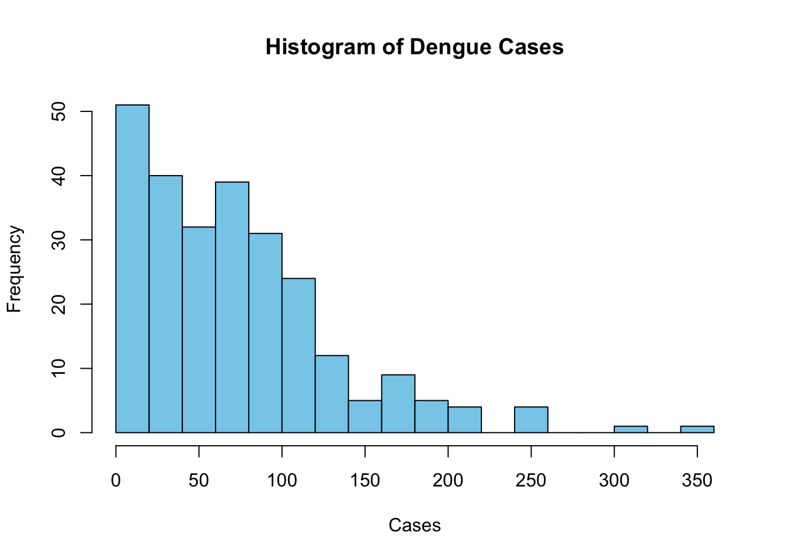
Overall, We can see that the majority of cases occurred in areas around the central and eastern regions. The central regions are likely lighter because they are smaller. Likewise, the larger central and eastern regions are darker than expected.
tm_shape(dengue_vils_gb_vc) +
tm_polygons("count",
palette = "Blues",
style="quantile", n=10)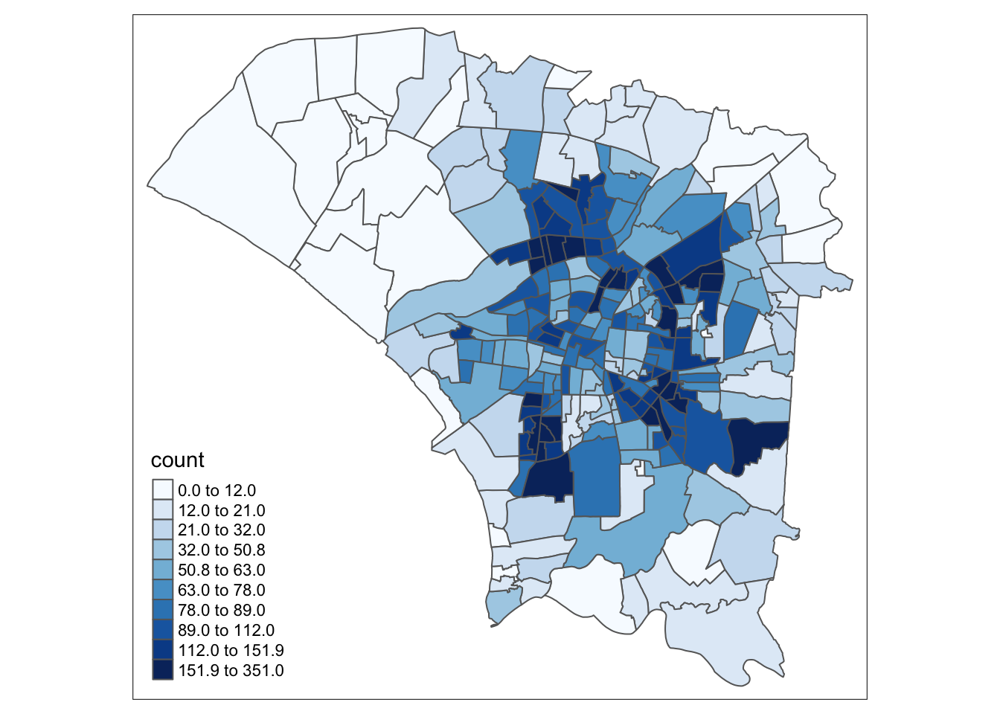
tm_shape(dengue_vils_gb_vc) +
tm_polygons("count",
palette = "Blues",
style="equal")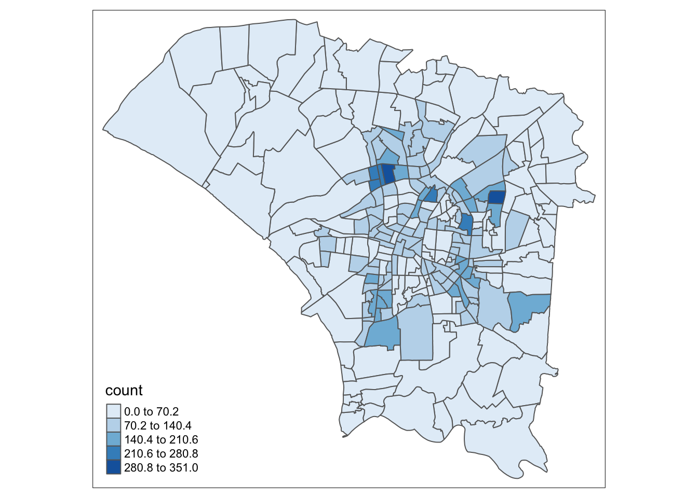
5.0 Global Measures of Spatial Autocorrelation
To assess spatial autocorrelation in our dataset, or how the presence of dengue cases in a region may form clusters.
5.1 Calculating Neighbours and Weights
I decided to use Queen’s neighbour criteria. This should also account for polygons that only share a corner. In realistic cases, polygons that share a corner are very likely to be close enough to influence each other.
However, I will also calculate centroids and inverse distance neighbours and weights for processes later on.
wm_q.nb <- st_contiguity(dengue_vils_gb_vc, queen=TRUE)
wm_q.wt <- st_weights(wm_q.nb, style = "W")
wm_q.count <- dengue_vils_gb_vc$countComputing Centroids
Show the code
coords <- cbind(
map_dbl(dengue_vils_gb_vc$geometry, ~st_centroid(.x)[[1]]),
map_dbl(dengue_vils_gb_vc$geometry, ~st_centroid(.x)[[2]])
)
k1dists <- st_nb_dists(coords, wm_q.nb)
summary(unlist(k1dists)) Min. 1st Qu. Median Mean 3rd Qu. Max.
0.001712 0.005418 0.007734 0.009716 0.012161 0.037394 Inverse Distance Neighbours and Weights
Show the code
wm_fd.nb <- st_dist_band(coords, lower=0, upper=0.04)
wm_fd.wt <- st_inverse_distance(wm_fd.nb, dengue_vils_gb_vc$geometry)
wm_ad.nb <- st_knn(coords, k=8)
wm_ad.wt <- st_inverse_distance(wm_ad.nb, dengue_vils_gb_vc$geometry)5.2 Global Moran’s I Test
In this section, I use Moran’s I to ascertain the presence of systemic spatial variations of dengue cases. In other words, how the number of dengue cases in each village varies according to its surrounding villages compared to that under spatial randomness.
global_moran_test(wm_q.count,
wm_q.nb,
wm_q.wt,
zero.policy = TRUE,
na.action=na.omit)
Moran I test under randomisation
data: x
weights: listw
Moran I statistic standard deviate = 12.869, p-value < 2.2e-16
alternative hypothesis: greater
sample estimates:
Moran I statistic Expectation Variance
0.468370647 -0.003891051 0.001346741 From this test, the positive moran’s I statistic suggests that there is clustering, or a degree of spatial autocorrelation. This is natural, since infections, including those transmitted through vectors like mosquitoes, spread to those within their surrounding. This transmission however, will be limited by the availability of vectors in addition to humans.
We can also see that the P-value is very small. From a frequentist approach, we can see that this is unlikely to have occured by chance.
To strengthen our findings, we run a monte-carlo simulation and observe the results.
moran_mc_res = global_moran_perm(wm_q.count,
wm_q.nb,
wm_q.wt,
nsim=999,
zero.policy = TRUE,
na.action=na.omit)
moran_mc_res
Monte-Carlo simulation of Moran I
data: x
weights: listw
number of simulations + 1: 1000
statistic = 0.46837, observed rank = 1000, p-value < 2.2e-16
alternative hypothesis: two.sidedFrom the above results, after 1000 simulations, our observed result outranks all of the random simulations. We can see the summary statistics below. As expected, the mean, min and max are close to 0, as would be the case for random distributions.
summary(moran_mc_res$res[1:999]) Min. 1st Qu. Median Mean 3rd Qu. Max.
-0.125934 -0.029208 -0.002802 -0.003406 0.019814 0.109774 var(moran_mc_res$res[1:999])[1] 0.001402967To visualise the monte-carlo simulation results, we plot a histogram. Our observed result was 0.468, which falls well outside the results generated from our simulation. As such, we can deem the results to be unlikely to be due to chance and that there is a significant degree of spatial autocorrelation in the number of dengue cases per village.
ggplot() +
aes(moran_mc_res$res[1:999]) +
geom_histogram(colour="black", fill="pink") +
labs(title = "Histogram of Simulated Moran's I For Tainan City Dengue Cases",
x = "Simulated Moran's I",
y = "Occurences") +
theme_minimal()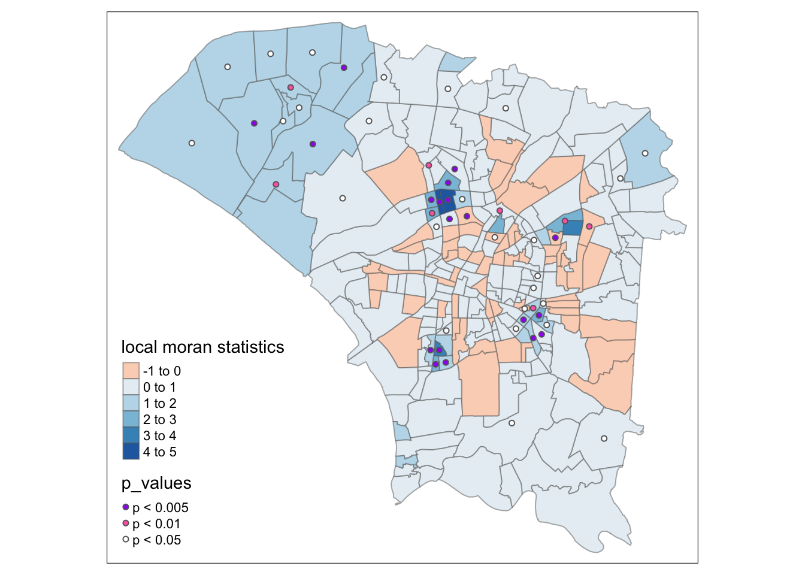
5.3 Interpreting Results
The results from the Global Moran’s I from both the initial test and the montecarlo simulation tell us that the Dengue cases are clustered, and that our result is unlikely to be due to chance.
This is quite intuitive for several reasons
Dengue can be transmitted from person to person through a vector. People and mosquitoes have limitations to their movement, but still move around. As such, areas with people and mosquitoes will have more dengue cases, leading to clusters
In areas to the north-west and south, there are fewer people, visible in the green, agriculture areas. While people may live and work there, there may be fewer people to give mosquitoes the ability to spread dengue.
The people may also not live in the less-urbanized areas. It is very difficult to pinpoint when and where a person first contract dengue. The dataset’s points are also not all occurring multiple times at the same points, meaning the location of the dengue case is probably not a clinic or medical facility. This means that the location associated the data is probably the person’s address. As such, there are few cases recorded in the rural areas, although the person may have contracted dengue there while working.
However, the above point does not make the data invalid. Data collection is difficult, and home addresses are a decent approximation of “location”.
However, two things are missing from this analysis, the temporal element, and estimates of how dengue cases relate over adjacent regions.
6.0 Local Measures of Spatial Autocorrelation
Local Indicators of Spatial Association, or LISA, let us evaluate clusters between regions. In simpler terms, it is a statistical method, where higher values denote that the region is more heavily influenced by its surroundings.
6.1 Local Moran’s I
It is also important to consider that not every local Moran’s I statistic will be statistically significant.
Calculating local Moran’s I statistics and append the results to the original dataframe as new columns.
local_mi <- local_moran(wm_q.count, wm_q.nb, wm_q.wt)
dengue_vils_gb_vc <- cbind(dengue_vils_gb_vc, local_mi)From class examples, I found it very unintuitive to plot a p-value chloropleth map next to the local Moran’s I map, since it requires me to match complex shapes mentally from one map to the other.
To reduce the mental load, I have combined these maps after categorising the p-values.
p_val_2_cats <- function(x) {
if (x < 0.005) {
return("p < 0.005")
} else if (x < 0.01) {
return("p < 0.01")
} else if (x < 0.05) {
return("p < 0.05")
} else {
return("p > 0.05")
}
}
dengue_vils_gb_vc <- dengue_vils_gb_vc %>%
mutate(p_values = sapply(p_ii, p_val_2_cats))6.2 Local Moran’s I Plots
From this map, we can observe statistically significant spatial autocorrelation in some central regions and the north-western region. In the case of the north-western regions, the significant local Moran’s I statistics tell us that for these areas with fewer infections, they were likely influenced by their neighbours’ lack of infections.
Local Moran’s I shines in meeting the objective of identifying interesting “outliers”, where dengue cases may not transmit intuitively across regions. Just above the centre of the map, there is a lighter region with fewer cases, and it was highlighted with a statistically significant Moran’s I of between -1 and 0.
This means that it stands out from its neighbours. In this case, it is because it had fewer dengue cases. I posit that this could have occurred for some of the following reasons
- The area is less populated (Fewer People)
- The area has some factors inhibiting the travel of mosquitoes (Fewer vectors)
If the area has some factors inhibiting the travel of mosquitoes, the area might be constantly covered in an urban haze due to industrial processes or traffic, but this is groundless speculation. Our analysis will be unlikely to give us all the answers from this dataset alone. It is a very interesting result nonetheless.
From this analysis, we can also observe several groups of regions near the centre with higher spatial autocorrelation. In contrast to the previous interpretation, these regions probably have a combination of more people and more mosquitoes. Dengue can be said to have spread easily between these regions, especially since these regions also had many dengue cases.
m1 <- tm_shape(dengue_vils_gb_vc) +
tm_fill(col = "ii",
style = "pretty",
palette = "PuOr",
title = "local moran statistics") +
tm_borders(alpha = 0.5) +
tm_shape(dengue_vils_gb_vc[dengue_vils_gb_vc$p_values != "p > 0.05", ]) +
tm_symbols(col = "p_values",
title.shape = "P Values:",
shapes.labels = c("p < 0.05", "p < 0.01", "p < 0.005"),
size = 0.1,
palette=c('purple', 'hotpink', 'white'))
m2 <- tm_shape(dengue_vils_gb_vc) +
tm_polygons("count",
palette = "Blues",
style="quantile", n=10)
tmap_arrange(m1,
m2,
asp=1,
ncol=2)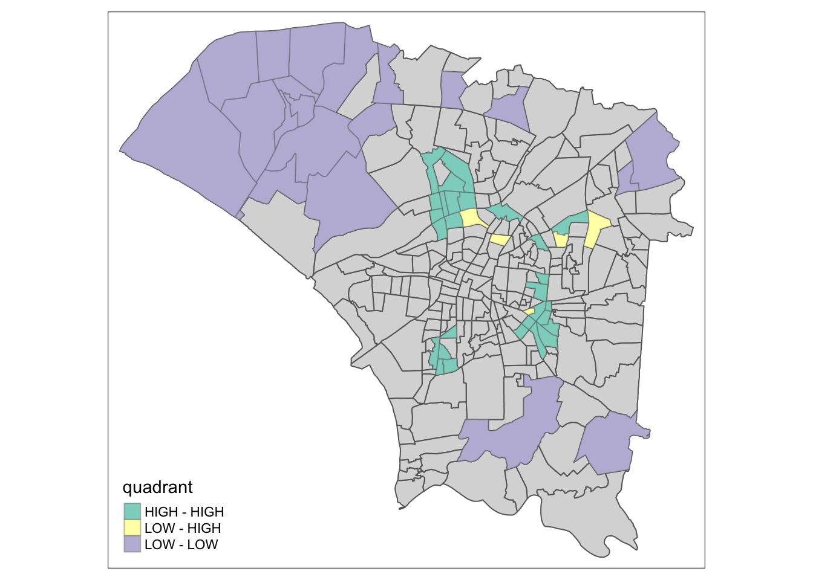
m1 <- tm_shape(dengue_vils_gb_vc) +
tm_polygons() +
tm_borders(alpha = 0.5) +
tm_shape(dengue_vils_gb_vc[dengue_vils_gb_vc$p_values != "p > 0.05", ]) +
tm_fill(col = "ii",
style = "pretty",
palette = "PuOr",
title = "local moran statistics")
m2 <- tm_shape(dengue_vils_gb_vc) +
tm_polygons("count",
palette = "Blues",
style="quantile", n=10)
tmap_arrange(m1,
m2,
asp=1,
ncol=2)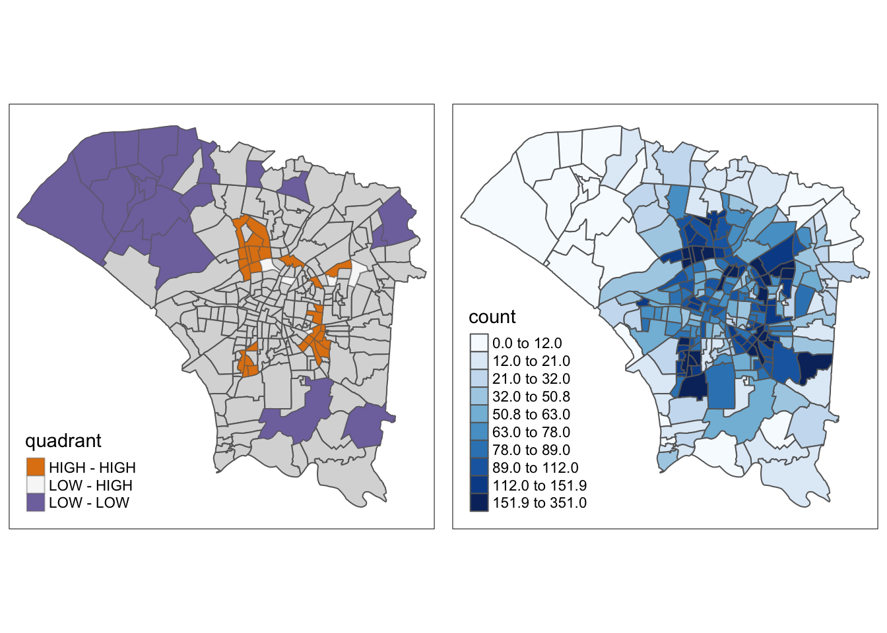
6.4 LISA Quadrant Map
We can refine the map above to only display statistically significant results and use LISA quadrants.
Show the code
quadrant <- vector(length=nrow(dengue_vils_gb_vc))
dengue_vils_gb_vc$lag_count <- st_lag(wm_q.count, wm_q.nb, wm_q.wt)
DV <- dengue_vils_gb_vc$lag_count - mean(dengue_vils_gb_vc$lag_count)
LM_I <- local_mi[,1]
signif <- 0.05
quadrant[DV <0 & LM_I>0] <- "LOW - LOW"
quadrant[DV >0 & LM_I<0] <- "LOW - HIGH"
quadrant[DV <0 & LM_I<0] <- "HIGH - LOW"
quadrant[DV >0 & LM_I>0] <- "HIGH - HIGH"
quadrant[local_mi[,5]>signif] <- 0
dengue_vils_gb_vc$quadrant <- quadrantFrom this map, we can clearly identify the regions that statistically significant spatial autocorrelation with their surrounding regions. The reasoning and observations follow the previous sections, but this map has it much clearer. In this map, it is also easier to identify the “ring” of regions with higher spatial autocorrelation and dengue cases.
If I were to link this observation back to Singapore, it could show a limitation of data collection.
Suppose the CBD was infested with dengue carrying mosquitoes. Apart from the few wealthy enough to live in that highly priced area, we may see a similar pattern of HIGH-HIGH regions in the suburbs. From my intuition, if I were collecting data and had produced this analysis quickly, I would proceed to try to figure out where people in the HIGH-HIGH region traveled to regularly, perhaps for work or other activities.
lisa_sig <- dengue_vils_gb_vc %>%
filter(p_ii < 0.05)
tmap_mode("plot")
m1 <- tm_shape(dengue_vils_gb_vc) +
tm_polygons() +
tm_borders(alpha = 0.5) +
tm_shape(lisa_sig) +
tm_fill("quadrant", palette="PuOr", midpoint=0,) +
tm_borders(alpha = 0.4)
m2 <- tm_shape(dengue_vils_gb_vc) +
tm_polygons("count",
palette = "Blues",
style="quantile", n=10)
tmap_arrange(m1,
m2,
asp=1,
ncol=2)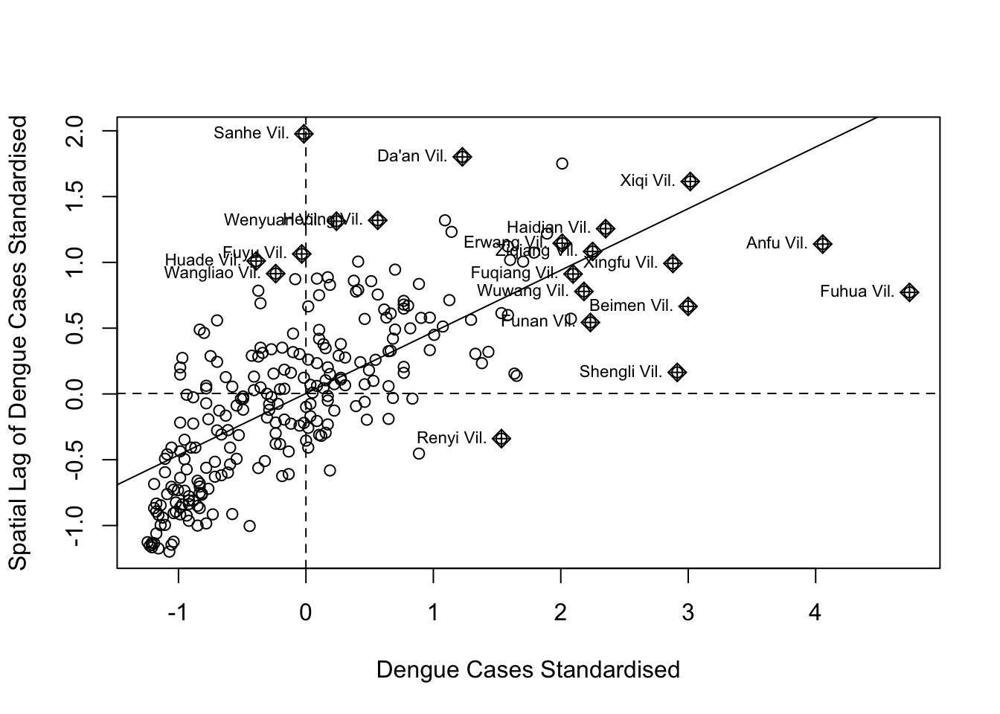
6.5 Hot and Cold Spot Analysis with Local Gi*
The local Gi* algorithm is an extension of the local Moran’s I statistic, but it also focuses more on “hot” and “cold” spots compared to the local Moran’s I, which is more about spatial autocorrelation alone.
Show the code
hcsa <- dengue_vils_gb_vc %>%
cbind(local_gstar_perm(wm_q.count, wm_q.nb, wm_q.wt, nsim=99)) %>%
mutate("p_sim" = replace(`p_sim`, `p_sim` > 0.05, NA),
"gi_star" = ifelse(is.na(`p_sim`), NA, `gi_star`))
hcsa.fd <- dengue_vils_gb_vc %>%
cbind(local_gstar_perm(wm_q.count, wm_fd.nb, wm_fd.wt, nsim=99)) %>%
mutate("p_sim" = replace(`p_sim`, `p_sim` > 0.05, NA),
"gi_star" = ifelse(is.na(`p_sim`), NA, `gi_star`))
hcsa.ad <- dengue_vils_gb_vc %>%
cbind(local_gstar_perm(wm_q.count, wm_ad.nb, wm_ad.wt, nsim=99)) %>%
mutate("p_sim" = replace(`p_sim`, `p_sim` > 0.05, NA),
"gi_star" = ifelse(is.na(`p_sim`), NA, `gi_star`))Comparing the results using different neighbour and weight calculations, it is clear that fixed distances have resulted in too much smoothing, which caused the central region to become a hotspot, even though it is not.
However, the adaptive distances make the observed ring of clusters around the central region clearer and highlight the colder spots in the north and south.
The maps are quite similar in terms of highlighted areas, but the meanings are quite different. In these plots, the hot spots, the ring around the central region, are clearly identified compared to the cold spots in the north and south.
Each method can be used to tell a different story. If I were investigating the relationships between regions, I would choose Local Moran’s, but use Local Gi* to identify hot and cold spots.
However, both methods do not tell much of a story about the past, and perhaps the future.
tmap_mode("plot")
tm_shape(hcsa) +
tm_fill("gi_star", palette="PuOr", midpoint=0, title="Gi*") +
tm_borders(alpha = 0.5)
tmap_mode("plot")
tm_shape(hcsa.fd) +
tm_fill("gi_star", palette="PuOr", midpoint=0, title="Gi*") +
tm_borders(alpha = 0.5)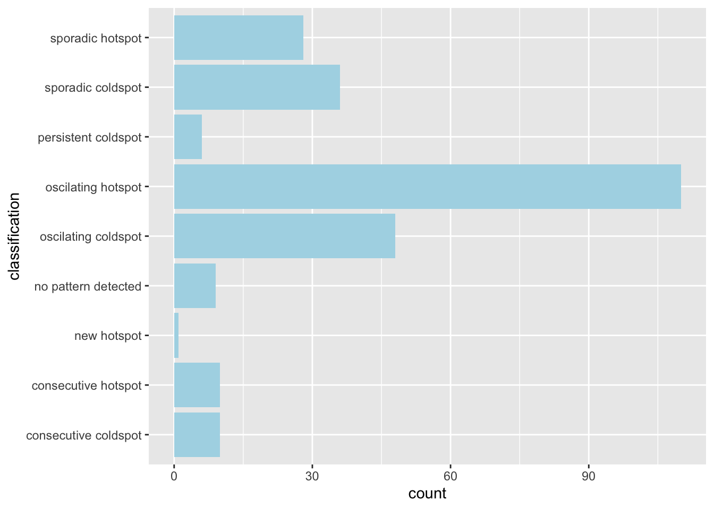
tmap_mode("plot")
tm_shape(hcsa.ad) +
tm_fill("gi_star", palette="PuOr", midpoint=0, title="Gi*") +
tm_borders(alpha = 0.5)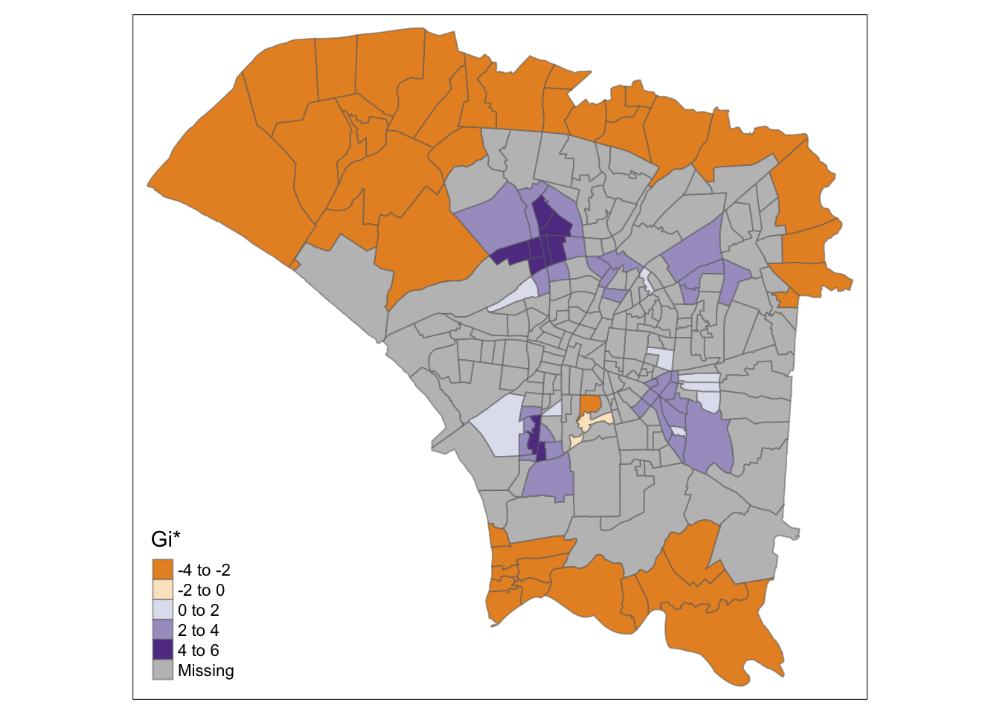
7.0 Emerging Hotspot Analysis
In this section, we can analyse hot and spot spots, as well which type of hot/cold spot they are. The type of spot tells interesting stories, such as the emergence of new hotspots, or oscillating hotspots, which could suggest the long-term ineffectiveness of control measures.
Since the emerging hotspot analysis uses the Mann-Kendall test with the local Gi* statistic, I consider the following 3 points
Data is not collected seasonally (Yes, it was collected weekly)
No covariates except what was plotted
- This is a hard one. Human population definitely affects the number of Dengue cases, or mosquito biting options.
- However, in many forms of data science, we have to work within our limitations (often times our data)
One point per time period (Yes)
7.1 Choosing Time Horizons
Something I noticed was that as region’s hot/cold spot types may change over time. This is natural since the calculations are done based on the data points provided.
For example, a region could start as a new hotspot before becoming an oscillating hotspot.
Based on the histogram below, I set points in time to conduct EHSA based on the progress of this dengue outbreak.
- Epiweek 35: Noticeable increase in cases
- Epiweek 39: The peak in cases
- Epiweek 45: Midway through the decline in cases
- Epiweek 50: When cases have dropped significantly (All of the spacetime object)
ggplot(spt, aes(x = epi_week, y = count)) +
geom_histogram(binwidth = 1, fill = "skyblue", stat = "identity") +
labs(x = "Epi Week", y = "Count") +
ggtitle("Histogram of Epi Week")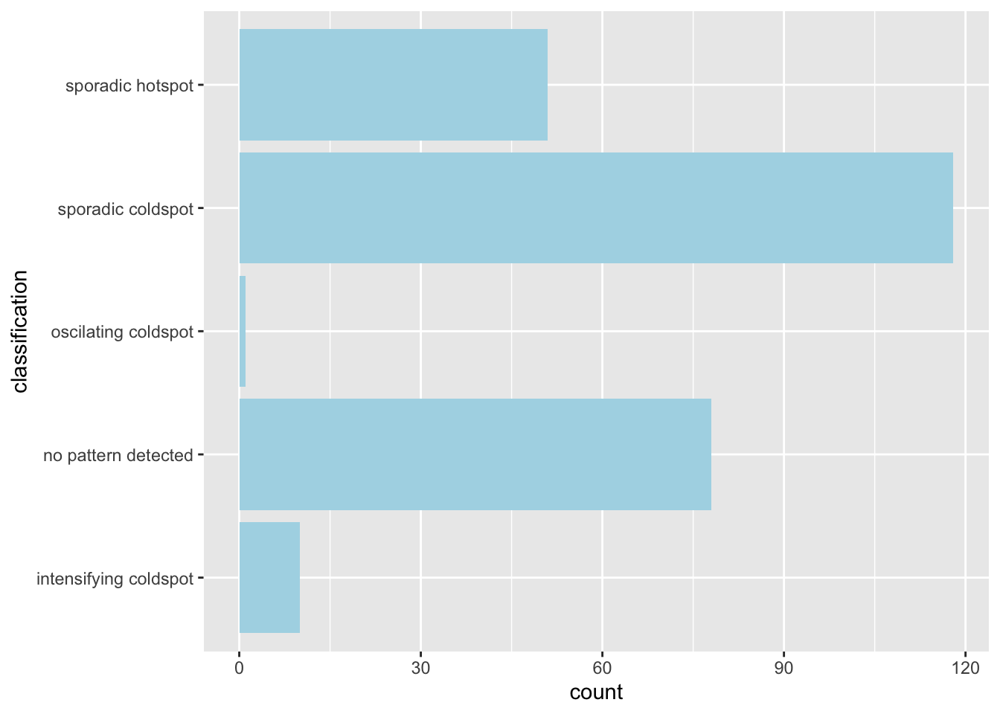
This is a chunk of code and function to ensure consistent coloring for each kind of hot/cold spot, making it easier to compare across maps.
Show the code
create_color_mapping <- function(all_breaks, all_colors, map_breaks) {
color_mapping <- rep(NA, length(map_breaks))
for (i in seq_along(map_breaks)) {
match_index <- match(map_breaks[i], all_breaks)
if (!is.na(match_index)) {
color_mapping[i] <- all_colors[match_index]
}
}
return(color_mapping)
}
all_breaks <- c("consecutive coldspot", "consecutive hotspot", "new coldspot", "new hotspot", "no pattern detected", "intensifying coldspot", "intensifying hotspot", "oscilating coldspot", "oscilating hotspot", "persistent coldspot", "persistent hotspot", "sporadic coldspot", "sporadic hotspot"
)
all_colors <- c("#FF5733", "#66CDAA", "#BA55D3", "#20B2AA", "#DC143C", "#4169E1", "#8A2BE2", "#FFD700", "#00FF7F", "#FF4500", "#9932CC", "#32CD32", "#FF1493"
)The rule of “Do not repeat yourself” applies in R too. I have learnt from my previous takehome exercise and will use functions for repeated analysis to avoid duplicated code.
I use inverse distance here since the size of polygons differ greatly. The adaptive method proved accentuate patterns while remaining factual, so I will use those metrics here.
Show the code
ehsa_4_spt <- function(sptcube, week_lim, geom) {
spt_n <- filter(spt, epi_week <= week_lim)
spt_nb <- spt_n %>%
activate("geometry") %>%
mutate(nb = wm_ad.nb,
wt = wm_ad.wt,
.before = 1) %>%
set_wts("wt") %>%
set_nbs("nb")
EHSA <- emerging_hotspot_analysis(
x = spt_n,
.var = "count",
k = 1,
nsim = 99
)
gghist <- ggplot(data = EHSA,
aes(x = classification)) +
geom_bar(fill="light blue") +
coord_flip()
twv_EHSA <- twvsz %>%
left_join(EHSA,
by = c("VILLCODE" = "location")) %>%
mutate(`p_value` = replace(`p_value`, `p_value` > 0.05, NA),
`classification` = ifelse(is.na(`p_value`), NA, `classification`))
plot(gghist)
color_mapping <- create_color_mapping(all_breaks, all_colors, sort(unique(twv_EHSA$classification)))
tm_shape(twv_EHSA) +
tm_fill(col = "classification", title = "Classification", palette = color_mapping) +
tm_borders()
}7.2 EHSA Maps
ehsa_4_spt(spt, 35, twvsz)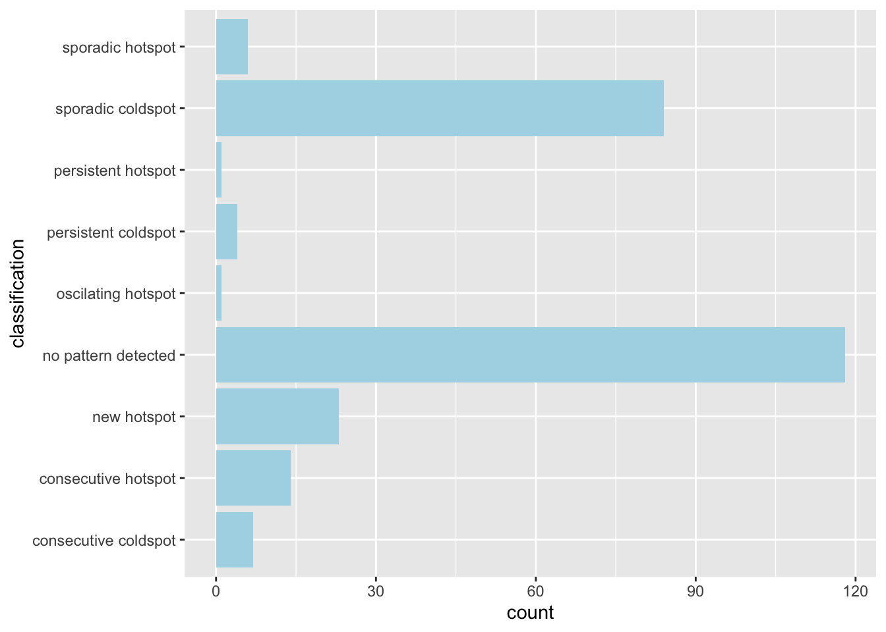
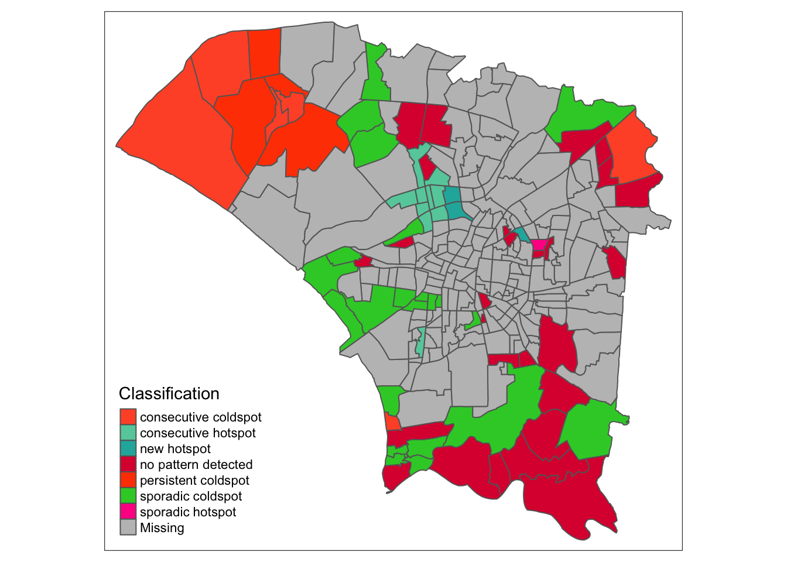
ehsa_4_spt(spt, 39, twvsz)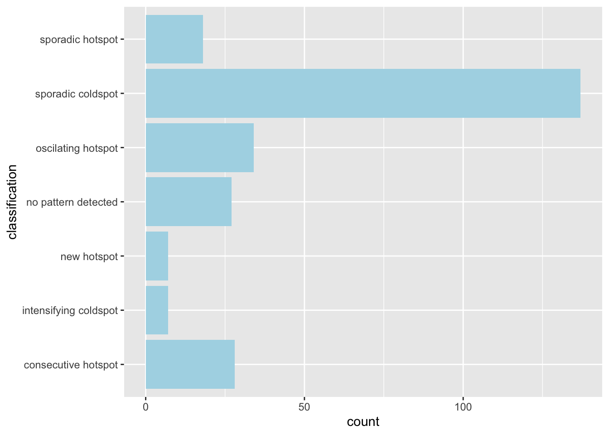
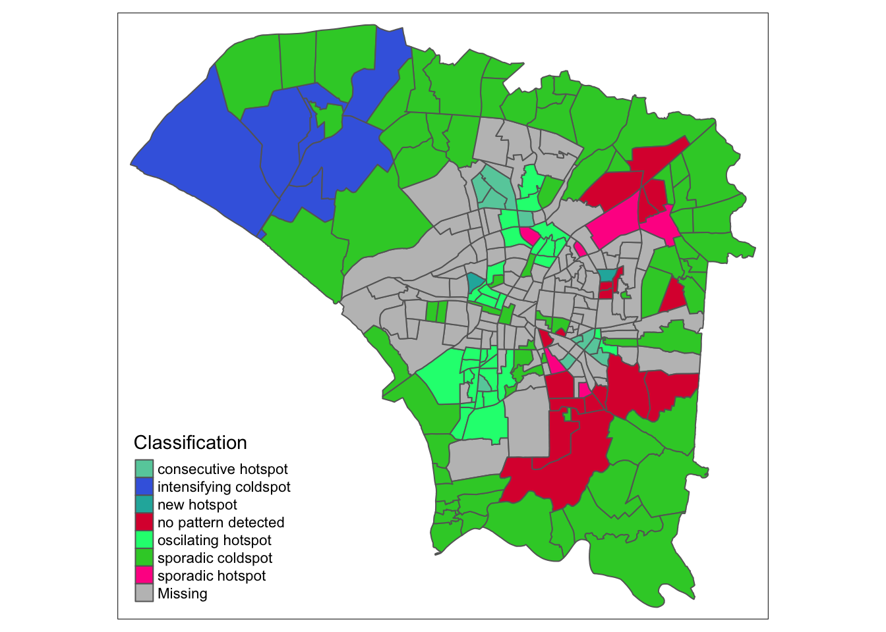
ehsa_4_spt(spt, 45, twvsz)
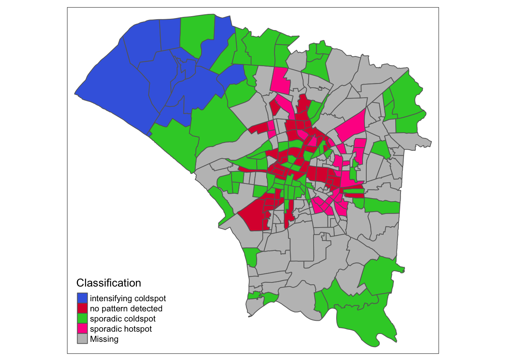
ehsa_4_spt(spt, 50, twvsz)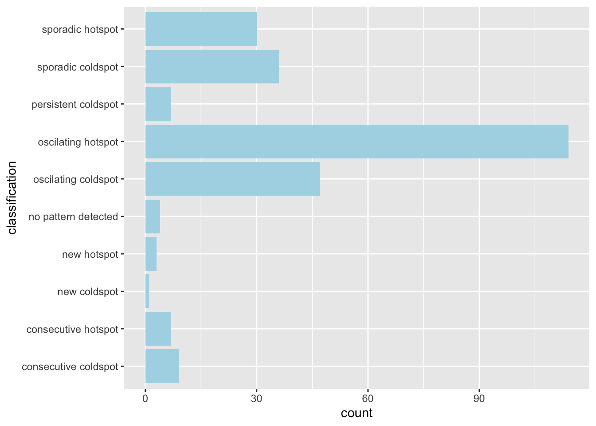
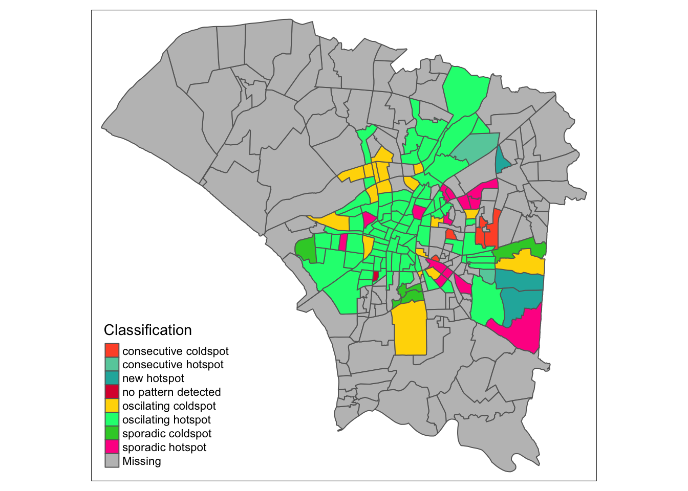
7.3 Reading the EHSA Maps
In week 35, when cases were picking up, we see two regions that would later form the previously mentioned ring of hotspots. The north remains dominated by cold spots, and the southern region had no patterns detected. This could be due to a lack of data in the regions, due to few observed cases at the time.
When looking at the classification histogram, there were few hotspots, with most being without any patterns or labelled as a cold spot.
Week 39 marks the week with the most cases, or the peak of the outbreak. The peripheral regions were still relatively unaffected, being labelled cold spots. However, the outbreak can be seen to be focused in the aforementioned ring. This tells us the the infections spread quickly in these areas up to the peak of the outbreak.
Initially, from the first maps I saw in the EDA, I thought that infections would have cropped up everywhere, since dengue has a significant time between infection and symptoms. The analysis thus far surprised me, since it seems that the people within the urban area did not quickly spread the disease to other regions. Perhaps the pattern would be different for something with more direct infections, such as COVID-19.
By week 45, cases can have been said to have slowed down. We see mostly cold spots and no-pattern, and the northwestern region becomes and intensifying coldspot, meaning they have remained a cold spot 90% of the time and are getting even colder. Interestingly, the ring has become a sporadic hotspot, meaning they are still hotspots, but have not always been a hotspot, but never a cold spot, as expected.
Finally, by week 50, the colors fade from the periphery and patterns emerge in the most cental regions. The central regions and some of the north become oscillating hotspots. Interestingly, the spread of Dengue cases continued into the northeast and east as new hotspots.
8.0 Conclusions
The spread of dengue fever over these 20 weeks, forming the main part of the 2023 dengue outbreak, has been quite different from what I expected.
EDA told a simple story of an infection concentrated in the more populous regions before radiating out the more suburban areas.
Local measures of spatial autocorrelation also identfied areas that formed clusters of dengue cases as well as those which resisted the plight faced by their neighbours.
Emerging hotspot analysis over various segments of time also showed me the progression of the dengue outbreak at various stages. I found this tool especially interesting, since the naive equivalent mechanism to identify this pattern would be staring at many facet maps before producing some conjecture.
The outbreak’s pace was different from expected, concentrating quickly in urban areas but slow to move outwards. I was especially interesting to see new hotspots forming in the outer regions even at week 50, in a sort of slow ripple.
From an epidemiology standpoint, using statistical methods to back up one’s story and ensuing actions to protect the public has some innate flaws, but far fewer than random conjecture. Although the underlying algorithms and code are difficult to explain to the layperson, the resulting maps are surprisingly easy to understand.
This is especially important when the spread of the disease does not align with intuition, since ineffective controls waste resources and undermine public trust.
I think the biggest conclusion, however, is that data is scarce. The location of dengue cases in the dataset are probably not exactly where the mosquito bit its victim. We therefore had to rely on an approximation instead.
The average citizen is aware that the government has immense amounts of data, but they may be unaware that having that data in a usable format for analysis is infrequent. Moving forward, I think that collecting data is important, but having the means to process this data and storing it in a consistent format is equally as important, since unorganised data is effectively useless.
9.0 Takeaways
As someone who is pursuing research, I know that collecting data is difficult and sometimes tedious. Automation can come at the cost of accuracy and consistency. Seeing these difficulties in small-scale data collection, the fact that this dengue dataset exists at all amazes me. It has overcome not only the barriers to data collection, but the barriers to public availability, which is usually large due to concerns over organisations and erring on the side of caution.
Although I am still sore about not being able to analyse the spread of different serotypes, I think this exercise has gone much smoother than expected, despite learning R 7 weeks ago. I am able to make my code a bit cleaner and use R functions more confidently. If the documentation for libraries can be brought up to the same standard as many python libraries, I might consider using it more often.